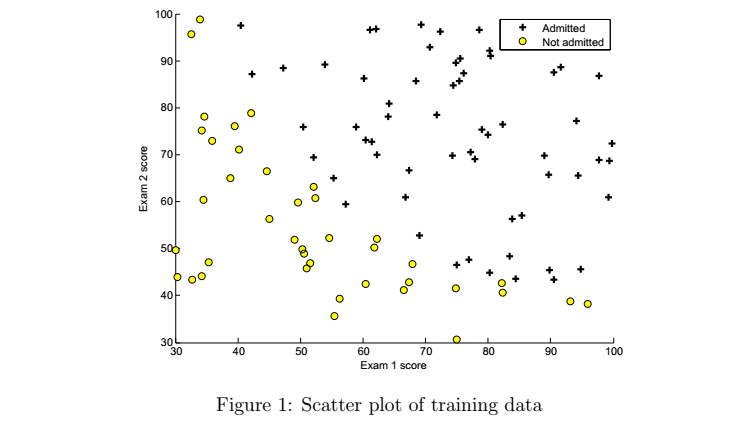
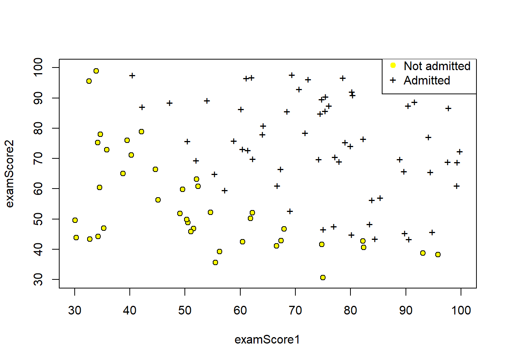
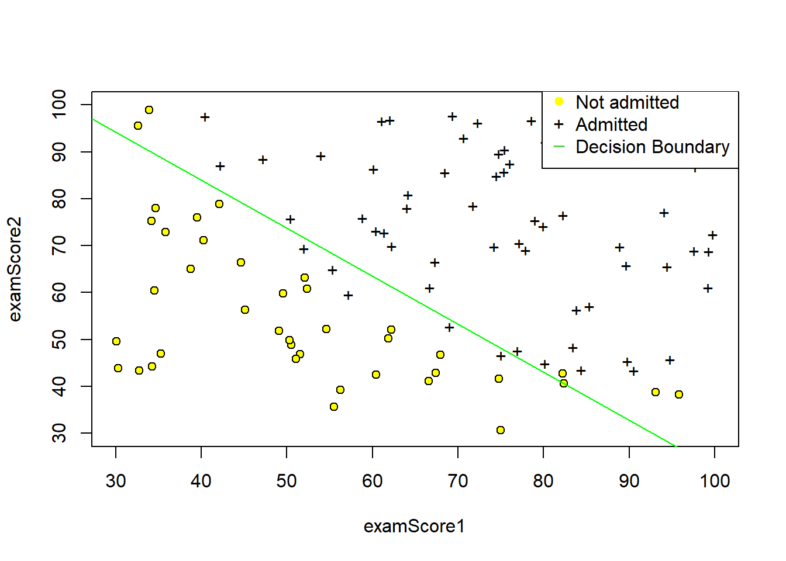

9 1 ML Ex 2 R implementationa: Logistic Regression
9.1 1.1 Introduction
In this exercise, you will implement logistic regression and apply it to two different datasets. In this part of the exercise, you will build a logistic regression model to predict whether a student gets admitted into a university. Suppose that you are the administrator of a university department and you want to determine each applicant’s chance of admission based on their results on two exams. You have historical data from previous applicants that you can use as a training set for logistic regression. For each training example, you have the applicant’s scores on two exams and the admissions decision.
Your task is to build a classification model that estimates an applicant’s probability of admission based the scores from those two exams. This outline and the framework code in ex2.m will guide you through the exercise.
9.1.1 Data Prep
Because this particular implementation is performed through R. the base code that is provided in ex2.m will not execute. Hence, the data will first have to be loaded.
9.1.2 Visualizing the data
Before starting to implement any learning algorithm, it is always good to visualize the data if possible. In the first part of ex2.m, the code will load the data and display it on a 2-dimensional plot by calling the function plotData. You will now complete the code in plotData so that it displays a figure like Figure 1, where the axes are the two exam scores, and the positive and negative examples are shown with different markers.

To help you get more familiar with plotting, we have left plotData.m empty so you can try to implement it yourself. However, this is an optional (ungraded) exercise. We also provide our implementation below so you can copy it or refer to it. If you choose to copy our example, make sure you learn what each of its commands is doing by consulting the Octave/MATLAB documentation.
#par(mar=c(4.1, 5.1, 1.1, 8.1), xpd=TRUE)
# Plot both groups
pch.list <- rep(0, 2)
pch.list[ex2data1$admission == 0] <- 21
pch.list[ex2data1$admission == 1] <- 43
plot(examScore2 ~ examScore1, ex2data1, ylim=range(c(30, 100)), xlim=range(c(30, 100)),
col = c(1,1), pch = c(pch.list),bg= "yellow")
# Add legend to top right, outside plot region
legend("topright", inset=c(0,-0.0375), legend=c("Not admitted","Admitted"), col = c("yellow",1), pch=c(19, 43))
9.1.3 Warmup exercise: sigmoid function
Before you start with the actual cost function, recall that the logistic regression hypothesis is defined as: \(h_θ(x) = g(θ^T x)\);
where function g is the sigmoid function. The sigmoid function is defined as:
\(g(z) = \frac{1}{1 + e^{−z}}\)
Your first step is to implement this function in sigmoid.m so it can be called by the rest of your program. When you are finished, try testing a few values by calling sigmoid(x) at the Octave/MATLAB command line. For large positive values of x, the sigmoid should be close to 1, while for large negative values, the sigmoid should be close to 0. Evaluating sigmoid(0) should give you exactly 0.5. Your code should also work with vectors and matrices. For a matrix, your function should perform the sigmoid function on every element.
You can submit your solution for grading by typing submit at the Octave/MATLAB command line. The submission script will prompt you for your login e-mail and submission token and ask you which files you want to submit. You can obtain a submission token from the web page for the assignment.
You should now submit your solutions.
## [1] 1## [1] 0## [1] 0.5## [,1] [,2]
## [1,] -Inf 0
## [2,] Inf 1## [,1] [,2]
## [1,] 0 0.5000000
## [2,] 1 0.73105869.2 1.2 Cost function and gradient
Now you will implement the cost function and gradient for logistic regression. Complete the code in costFunction.m to return the cost and gradient.
Recall that the cost function in logistic regression is
\(J(\theta) = \frac{1}{m} \sum_{i=1}^m \large[ -y^{(i)}\ \log (h_\theta (x^{(i)})) - (1 - y^{(i)})\ \log (1 - h_\theta(x^{(i)})) \large]\)
A vectorized implementation is:
\[\begin{align} & h = g(X\theta)\newline & J(\theta) = \frac{1}{m} \cdot \left(-y^{T}\log(h)-(1-y)^{T}\log(1-h)\right) \end{align}\]
and the gradient of the cost is a vector of the same length as \(\theta\) where the \(j^{th}\) element \((for j = 0, 1, ....,n)\) is defined as follows:
Remember that the general form of gradient descent is:
\[\begin{align}& Repeat \; \lbrace \newline & \; \theta_j := \theta_j - \alpha \dfrac{\partial}{\partial \theta_j}J(\theta) \newline & \rbrace\end{align}\]
We can work out the derivative part using calculus to get:
\[\begin{align} & Repeat \; \lbrace \newline & \; \theta_j := \theta_j - \frac{\alpha}{m} \sum_{i=1}^m (h_\theta(x^{(i)}) - y^{(i)}) x_j^{(i)} \newline & \rbrace \end{align}\]
Notice that this algorithm is identical to the one we used in linear regression. We still have to simultaneously update all values in theta.
A vectorized implementation is:
\(\theta := \theta - \frac{\alpha}{m} X^{T} (g(X \theta ) - \vec{y})\)
The vectorized version;
\(\nabla J(\theta) = \frac{1}{m} \cdot X^T \cdot \left(g\left(X\cdot\theta\right) - \vec{y}\right)\)
Note that while this gradient looks identical to the linear regression gradient, the formula is actually different because linear and logistic regression have different definitions of \(h_θ(x)\).
Once you are done, ex2.m will call your costFunction using the initial parameters of θ. You should see that the cost is about 0.693. You should now submit your solutions.
# 4. Add intercept vector to the X matrix and set m(obs) and n(predictors)
X <- cbind(ones = rep(1,dim(X)[1]), X)
m <- dim(X)[1]
n <- dim(X)[2]
# 5. Set initial theta's
initialTheta <- matrix(rep(0, n), n, 1)
# 6. Make the cost function
# - Input (Initial theta, X, y)
# - Output (Cost and gradient)
costFunction <- function(theta, X, y){
cost <- 1/m * ((t(-y)%*%log(sigmoid(X%*%theta))-
t((1-y))%*%log(1- sigmoid(X%*%theta))))
grad <- 1/m * (t(sigmoid(X %*% theta) - y)%*%X)
return(list(cost = cost, grad = grad))
}
# Expected gradients with initial theta (-0.1, -12.0092, -11.2628)
costFunction(initialTheta, X, y)## $cost
## [,1]
## [1,] 0.6931472
##
## $grad
## ones examScore1 examScore2
## [1,] -0.1 -12.00922 -11.26284# With test theta - expected cost 0.218, grad: (0.043, 2.566, 2.647)
costFunction(c(-24, 0.2, 0.2), X, y)## $cost
## [,1]
## [1,] 0.2183302
##
## $grad
## ones examScore1 examScore2
## [1,] 0.04290299 2.566234 2.646797Fully vectorized cost and grad functions :D
9.3 1.3 Learning parameters using fminunc
In the previous assignment, you found the optimal parameters of a linear regression model by implementing gradent descent. You wrote a cost function and calculated its gradient, then took a gradient descent step accordingly. This time, instead of taking gradient descent steps, you will use an Octave/-MATLAB built-in function called fminunc.
Octave/MATLAB’s fminunc is an optimization solver that finds the minimum of an unconstrained function. For logistic regression, you want to optimize the cost function J(θ) with parameters θ.
Concretely, you are going to use fminunc to find the best parameters θ for the logistic regression cost function, given a fixed dataset (of X and y values). You will pass to fminunc the following inputs: - The initial values of the parameters we are trying to optimize. - A function that, when given the training set and a particular θ, computes the logistic regression cost and gradient with respect to θ for the dataset (X, y)
In ex2.m, we already have code written to call fminunc with the correct arguments.
In this code snippet, we first defined the options to be used with fminunc. Specifically, we set the GradObj option to on, which tells fminunc that our function returns both the cost and the gradient. This allows fminunc to use the gradient when minimizing the function. Furthermore, we set the MaxIter option to 400, so that fminunc will run for at most 400 steps before it terminates.
To specify the actual function we are minimizing, we use a “short-hand” for specifying functions with the @(t) ( costFunction(t, X, y) ) . This creates a function, with argument t, which calls your costFunction. This allows us to wrap the costFunction for use with fminunc.
If you have completed the costFunction correctly, fminunc will converge on the right optimization parameters and return the final values of the cost and θ. Notice that by using fminunc, you did not have to write any loops yourself, or set a learning rate like you did for gradient descent. This is all done by fminunc: you only needed to provide a function calculating the cost and the gradient.
Once fminunc completes, ex2.m will call your costFunction function using the optimal parameters of θ. You should see that the cost is about 0.203.
This final θ value will then be used to plot the decision boundary on the training data, resulting in a figure similar to Figure 2. We also encourage you to look at the code in plotDecisionBoundary.m to see how to plot such a boundary using the θ values.
# 8. Find an implementation of advanced gradient descent algortihm fminunc
objCost <- function (theta){
1/m * (sum
(-y*log(sigmoid(X%*%theta))-
(1-y)*log(1- sigmoid(X%*%theta)))
)
}
grad <- function(theta) {
1/m * (t(sigmoid(X %*% theta) - y)%*%X)
}
library(ucminf)
# 9. Set options for fminunc and optimize with initial theta's
# The only arguments that objective and gradient functions that are passed to the
# advanced algorithm can take is the parameters to be optimized - i.e. theta
# You can read more about the specific method.
# Expected cost : 0.203 - Expected gredients: -25.161, 0.206, 0.201
ucminf::ucminf(par = initialTheta, fn = objCost, gr = grad, control = list(trace = 0))## $par
## [1] -25.1613327 0.2062317 0.2014716
##
## $value
## [1] 0.2034977
##
## $convergence
## [1] 1
##
## $message
## [1] "Stopped by small gradient (grtol)."
##
## $invhessian.lt
## [1] 3314.2043768 -26.3783748 -26.9990573 0.2247604 0.2016443
## [6] 0.2355011
##
## $info
## maxgradient laststep stepmax neval
## 4.236716e-07 2.095353e-05 3.307500e+00 3.200000e+01#optim(par = initialTheta, fn = objCost, gr = grad, method = "Nelder-Mead", control = list(trace = 0, maxIte = 400))
#optim(par = c(-24, 0.2, 0.2), fn = objCost, gr = grad, method = "Nelder-Mead", control = list(trace = 0, maxIte = 400))
# It actually converges to the same thing irrespective of the theta, and whether you have provided gradient function or not.This final θ value will then be used to plot the decision boundary on the training data, resulting in a figure similar to Figure 2. We also encourage you to look at the code in plotDecisionBoundary.m to see how to plot such a boundary using the θ values.
9.4 1.4 Plot the decision boundary
For logistic regression, h = sigmoid(X * theta). This describes the relationship between X, theta, and h. We know theta (from gradient descent). We are given X. So we can compute ‘h’. Now, by definition, the decision boundary is the locus of points where h = 0.5, or equivalently (X * theta) = 0, since the sigmoid(0) is 0.5.
Now we can write out the equation for the case where we have two features and a bias unit, and we write X as \([x_0 x_1 x_2x]\) and theta as \([\theta_0 \theta_1 \theta_2]\)
\(0 = x_0 \theta_0 + x_1 \theta_1 + x_2 \theta_2\)
\(x_0\) is the bias unit, it is hard-coded to 1.
\(0 = \theta_0 + x_1 \theta_1 + x_2 \theta_2\)
Solve for \(x_2\)
\(x_2 = -(\theta_0 + x_1 \theta_1) / \theta_2\)
Now, to draw a line, you need two points. So pick two values for \(x_1\) - anything near the minimum and maximum of the training set will serve. Compute the corresponding values for \(x_2\), and plot the \((x_1 x_2)\)) pairs on the horizontal and vertical axes, then draw a line through them.
This line represents the decision boundary.
This is exactly what the plotDecisionBoundary() function does. \(x_2\) is the variable “plot_y”, and \(x_1\) is the variable “plot_x”.
“plot_x” also adds some factors of -2 and +2 to the min and max values. This is just to visually center the plot with some margin around the edges.
** In R you need the intercept and slop of this line rather than picking any point. i.e. **
\(x_2 = -\frac{\theta_0 }{\theta_2} - \frac{\theta_1}{\theta_2}x_1\)
finalTheta <- ucminf::ucminf(par = initialTheta, fn = objCost, gr = grad, control = list(trace = 0))$par
pch.list <- rep(0, 2)
pch.list[ex2data1$admission == 0] <- 21
pch.list[ex2data1$admission == 1] <- 43
plot(examScore2 ~ examScore1, ex2data1, ylim=range(c(30, 100)), xlim=range(c(30, 100)),
col = c(1,1), pch = c(pch.list),bg= "yellow")
# Add legend to top right, outside plot region
legend("topright", inset=c(0,-0.0375), legend=c("Not admitted","Admitted", "Decision Boundary"), col = c("yellow",1, 3), pch=c(19, 43, 95))
abline(a = -finalTheta[1]/finalTheta[3], b = -finalTheta[2]/finalTheta[3], col = "green")
9.5 1.5 Evaluating logistic regression
After learning the parameters, you can use the model to predict whether a particular student will be admitted. For a student with an Exam 1 score of 45 and an Exam 2 score of 85, you should expect to see an admission probability of 0.776.
Another way to evaluate the quality of the parameters we have found is to see how well the learned model predicts on our training set. In this part, your task is to complete the code in predict.m. The predict function will produce “1” or “0” predictions given a dataset and a learned parameter vector θ.
parameters <- ucminf::ucminf(par = initialTheta, fn = objCost, gr = grad, control = list(trace = 0))$par
prediction <- function(theta,x1, x2){
sigmoid(theta[1]+ theta[2]*x1 + theta[3]*x2)
}
# Use your new thetas to predict - score 45 and 85 respectively.
prediction(parameters, 45, 85)## [1] 0.7762907After you have completed the code in predict.m, the ex2.m script will proceed to report the training accuracy of your classifier by computing the percentage of examples it got correct.
## [1] 89